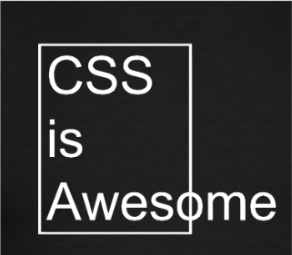
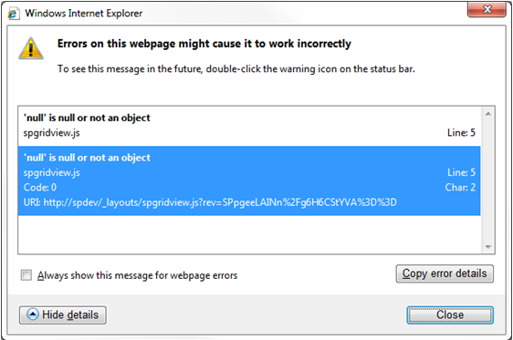
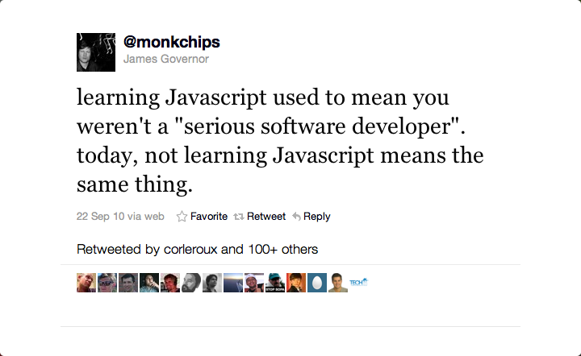
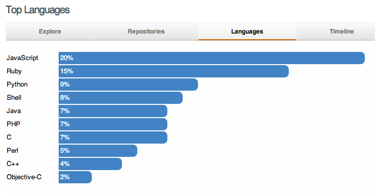
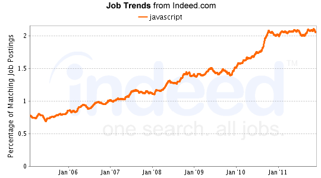
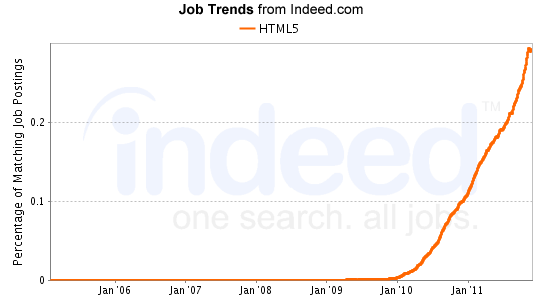
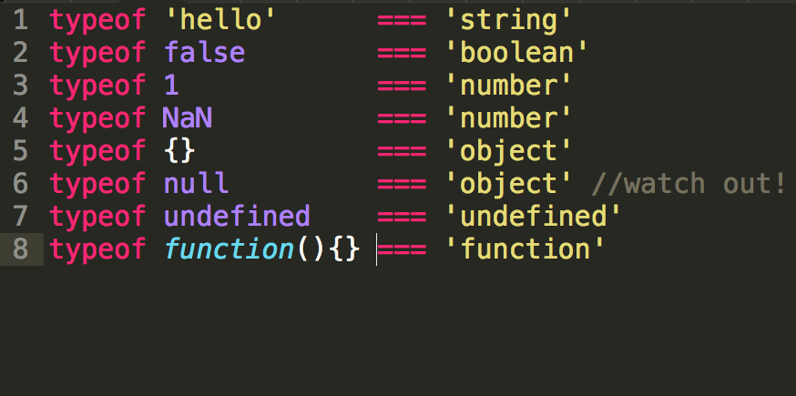

Your browser doesn't support the features required by impress.js, so you are presented with a simplified version of this presentation.
For the best experience please use the latest Chrome or Safari browser. Firefox 10 and Internet Explorer 10 should also handle it.
Karl Böhlmark
Coach - Web Development
Mogul AB Arts and Technology



Varför JavaScript?

"I’ve found it in turns frustrating and enlightening, ridiculous and brilliant. I have never felt so empowered by a language and its ecosystem"
- Dan North



936

172
LiveScript
JavaScript
JScript
ECMAScript
JS
Key ideas
- Load and go delivery
- Loose typing
- Objects as general containers
- prototypal inheritance
- Lambda
- Linkage through global variables
- Strings
- booleans
- numbers
- objects
- null
- undefined

Variabeldeklarationer
var a = "hello world";
var b = false, c=4, d=5.2;
var b = 4;
e = 6;
var o = {};
var noop = function(){};
Funktionsdeklarationer
var f1 = function(a){return a;};
function f2(){}
var f3 = function getStuff(cb){
$.get('/stuff', cb);
};
var c1 = function Person(name){
this.name = name;
}
(function(){ console.log('immediate');}());
Funktionsanrop
myFunction();
myObj.myFunction();
new MyFunction();
myFunction.call(this, arg1);
myFunction.apply(this, []);
Closures
(function(){
var subscriptions = {};
return {
subscribe = function(event, handler){
(subscriptions[event] = subscriptions[event] || [])
.push(handler);
},
publish = function(event, data){
(subscriptions[event] || [])
.forEach(function(subscriber){
subscriber(data);
});
}
};
}());
JS i Webbläsare
- DOM API:erna är horribla
- Kompatibilitet <- IE
- Prestanda <- IE
- Event loop / enkel-trådat -> callback-orienterat

DOM - selektion
//välj ut element
$('.myClass') // utifrån css-klass
$('a') // utifrån tag name
$('#myId') // utifrån id
$(':not(a)') // utifrån negativa kriterier
$(':visible') // utifrån synlighet
$('form:has(select)') // utifrån HTML-innehåll
$('span:contains(nyancat)') //utifrån text-innehåll
// och så vidare
Events
// utifrån en selektion av element
$('a') // registrera event-hanterare
.click(function(){ alert(this.href); })
.mouseover(function(){
$(this).css('color', 'green') ;
});
//delegera events till parent-element
$('body').on('click', 'a', function(){
console.log('')
});